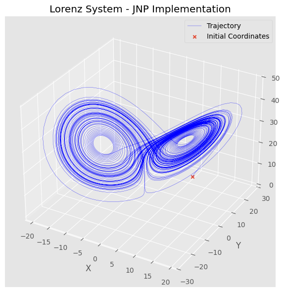
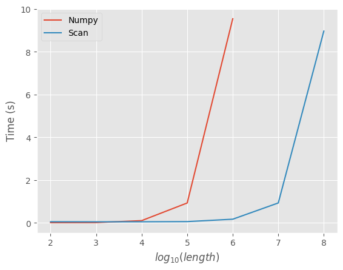

Sequential Computation with jax.lax.scan
Introduction
Python while having a very simple and intuitive syntax is generally not performant out of the box, esspecially with regard to control flows like loops and conditionals. JAX provides simple API’s and functional transformations to make python more performant while keeping the simple syntax. Specifically, what we will be looking into today is the jax.lax.scan, which I will call scan for short.
What is scan good for?
In the simulation of dynamical systems, for example, we are confronted with the situation of moving the coordinates through time using the rules given by some differential or difference equation. For reasons we will see late, I will call this carry. We are looking to carry inital coordinates through time. But just moving these coordinates is not really the point. We want to know store the trajectory over time, which requires us to store these coordinates, or the carry, for every timestep in the simulation. This is type of problem that scan is suited for.
Solution with Numpy and JNP
But before we discuss the usage of scan, let us discuss a simple solution to this problem. We can define some stepper, a function that takes in coordinates at the current timestep and returns the coordinates at the next timestep. We could then define a variable called trajectory and append to this at each iteration in the loop. Finally, we just set the next coordinates that have been returned as the coordinates. It would look something like this for the Lorenz system:
import numpy as np
class LorenzRK4StepperNP:
def __init__(self, sigma=10., rho=28., beta=8/3, tau=0.01):
self.sigma = sigma
self.rho = rho
self.beta = beta
self.tau = tau
def __call__(self, coords):
def lorenz_rhs(coords, sigma=self.sigma, rho=self.rho, beta=self.beta):
return np.array(
[
sigma * (coords[1] - coords[0]),
coords[0] * (rho - coords[2]) - coords[1],
coords[0] * coords[1] - beta * coords[2],
]
)
k_1 = self.tau * lorenz_rhs(coords)
k_2 = self.tau * lorenz_rhs(coords + (1 / 2) * k_1)
k_3 = self.tau * lorenz_rhs(coords + (1 / 2) * k_2)
k_4 = self.tau * lorenz_rhs(coords + k_3)
new_coords = coords + (1 / 6) * (k_1 + 2 * k_2 + 2 * k_3 + k_4)
return new_coords
def rollout_loop(stepper, init_coords, length):
coords = init_coords
traj = [init_coords]
for _ in range(length):
coords = stepper(coords)
traj.append(coords)
return traj
sigma=10.
rho=28.
beta=8/3
tau = 0.01
stepper_np = LorenzRK4StepperNP(sigma, rho, beta, tau)
init_coords = np.full((3,), 10)
final_time = 100
length=int(final_time / tau)
%timeit rollout_loop(stepper_np, init_coords, length)
91.1 ms ± 1.82 ms per loop (mean ± std. dev. of 7 runs, 10 loops each)

This is a perfectly valid solution to this problem. The issue is that as we make the final time larger, or increase the number of initial conditions, a loop based approach like this will not scale well. We will need to implement some vectorised and compiled function in order to speed up the computation. This is where JAX can help. While, JAX provides an almost identical API to Numpy, via jax.numpy we need to be careful. A simple drop in replacement does not always speed up computation.
import jax.numpy as jnp
class LorenzRK4StepperJNP:
def __init__(self, sigma=10.0, rho=28.0, beta=8 / 3, tau=0.01):
self.sigma = sigma
self.rho = rho
self.beta = beta
self.tau = tau
def __call__(self, coords):
def lorenz_rhs(coords, sigma=self.sigma, rho=self.rho, beta=self.beta):
return jnp.array(
[
sigma * (coords[1] - coords[0]),
coords[0] * (rho - coords[2]) - coords[1],
coords[0] * coords[1] - beta * coords[2],
]
)
k_1 = self.tau * lorenz_rhs(coords)
k_2 = self.tau * lorenz_rhs(coords + (1 / 2) * k_1)
k_3 = self.tau * lorenz_rhs(coords + (1 / 2) * k_2)
k_4 = self.tau * lorenz_rhs(coords + k_3)
new_coords = coords + (1 / 6) * (k_1 + 2 * k_2 + 2 * k_3 + k_4)
return new_coords
stepper_jnp = LorenzRK4StepperJNP(sigma, rho, beta, tau)
init_coords = jnp.full((3,), 10)
length = int(final_time / tau)
%timeit rollout_loop(stepper_jnp, init_coords, length)
20.4 s ± 290 ms per loop (mean ± std. dev. of 7 runs, 1 loop each)

We can see that qualitatively, the Lorenz plots are produced are the same. I say qualitatively sice we can see that there is a lonely single paths along the outside of the butterfly shape in the jax implementation, but none in the numpy. This is simply due to the fact that numpy uses double precision and jax uses single precision by default. Since this system is chaotic, a small difference in implementation like this will produce different results.
The other difference is that the jax implementation takes significantly longer. But as I said, this is a faily naïve translation of simple method. We will be able to speed this up significantly using the scan functional.
Using scan
scan takes in four main arguments that pertain to us.
- f: This is a function that is used to move the system, kind of like the stepper method called in the body of the loop, however this method needs to have a very specific signature which we will discuss in a little bit.
- init: These are the initial conditions that will be passed into the funtion f.
- xs: Again, this is an array that will be passed to the function f during each iteration, this is used for some external force, like the control or action in a reinforcement learning problem.
- length: The number of iterations that will be run.
That is a lot of information but I think it will all makes sense if we look at what a vanilla python implementation of the scan function would be:
def scan(f, init, xs, length=None):
if xs is None:
xs = [None] * length
carry = init
ys = []
for x in xs:
carry, y = f(carry, x)
ys.append(y)
return carry, np.stack(ys)
First off, we can see what the specific signature of the function f is. It is a function that takes in carry in its first argument. This is why I used carry to mean coordinates earlier, and it also takes in an x from the xs. In the loop, we can see that carry is passed again to the function, and the other output of the function is appended to a list, y, which is then stacked and returned after execution. Thus, f must take two arguments, and return two values. The first will be the coordinates to carry to the step step, and if we make the second the coordinates as well, we will get the coordinates stacked in the second position on the return of scan. The stacked history of the coordinates is just the trajectory the initial conditions have taken. Let us adjust our stepper to confirm to what is needed for f and adjust the rollout to use scan.
import jax
def rollout_scan(stepper):
def scan_fn(coords, _):
new_coords = stepper(coords)
return new_coords, new_coords
def rollout_fn(init_coords, length):
_, trajectory = jax.lax.scan(scan_fn, init_coords, None, length)
return trajectory
return rollout_fn
%timeit rollout_scan(stepper_jnp)(init_coords, length).block_until_ready()
56.2 ms ± 1.58 ms per loop (mean ± std. dev. of 7 runs, 10 loops each)

Already, over such a small final time we can see that the rollout_scan has halved the execution time, while still, qualitatively, we still have the same butterfly shape. Let now comapre the execution time for our scan implementation, comapred with the numpy.

Initially, we see that the numply implementation is actually faster than the scan. But as soon as the length grows, the numpy implementation grows linearly (it loops exponential but that is just because the x-axis is the logorithm), and the jax implementation is almost constant which is just remarkable, this is until \(10^5\) iterations. We see the scan implementation then start to increase from \(10^5, \ 10^5, 10^7\) similarly to how Numpy grew 2 orders of magnitude earlier. Meaning that the scan implmenttion is one hundred times faster than the numpy. This speedup is not even considering the implementation with specialised preocessing units, this speedup is on a vanilla CPU.
The main question is how? How can JAX do this?
To answer this, lets consider why JAX was so slow in a normal loop. At a low level, JAX converts linear algebra operations into XLA operations. A normal python loop will be unenrolled and each operation in an interation will be a node on that graph. Naturally, this will not be very efficient since the the construction and execution of this graph can be slow is the graph is too large. The scan function converts the code into a singe XLA while operations which means the computation can be run incredibly fast on your processing unit.
Conclusion
While it is obvious that this scan functional is not replacing loops, we may still need the indexing and small loops may be faster than scan. It is incredible how much faster some computations can be when they do confirm to the correct signature and situation that is required. This is just a taste of what JAX can do, even what the scan functional can do. What we will discuss in another post is how we can use both scan and jax.vmap to create an incredibly fast routine to compute the maximal characteristic Lyapunov exponent in another chaotic system.